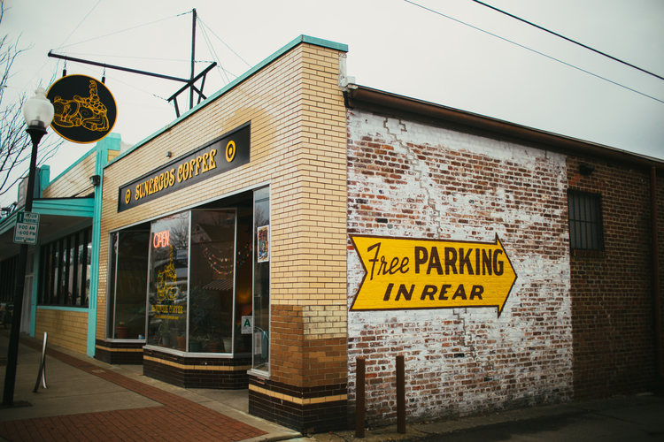

At Sunergos we are all about showcasing great coffees and creating great coffee experiences.
One of the best ways to experience our coffee is to come visit us! We have 3 locations in Louisville where you can enjoy and feel right at home!
Preston
-
2122 South Preston St
Louisville, KY 2017
(502)634-1243
Monday- Saturday 6:30am- 9pm
Sunday 7am - 8pm
Preston is our original shop and site of our first roastery. Preston is a comfortable bustling café in the heart of Schnitzelburg. We are right next door to the famous Nord’s Bakery as well as respected music venues The New Vintage and Zanzabar. Preston is also home to our new training lab where we conduct public coffee classes.
Woodlawn
-
306 West Woodlawn Ave
Louisville, KY 2014
(502)368-2820
Monday- Saturday 6:30am- 9pm
Sunday 6:30am - 8pm

Woodlawn is located in the diverse Beechmont neighborhood near the Famous Churchill Downs, home of the Kentucky Derby. It is our second store and is also home to our roastery and offices. This place was built with comfort in mind and coffee in hand. You can view our roastery through the large windows while enjoying the fruits of our collective labor and generally entering into all out coffee bliss.
5th Street
-
231 South 5th St
Louisville, KY 40202
(502)589-3222
Monday - Friday 6:30am- 5:00pm
Sat - Sun- Closed
5th st is our newest shop located in the heart of Downtown Louisville. This little 250 sq. foot shop boasts big coffee presence with 3 espressos on tap all day from our Slayer Espresso machine and a rotation of delicious brewed coffee options. There are no seats but we like that just fine, since coffee this good makes you stand up and take notice